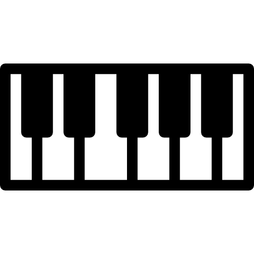

Toquemos el Dom
Acerca de nosotros
Notas sobre música
Nuestras redes
Piano
Batería
Marimba
Otros Instrumentos
Volver a inicio
Ocultar notas
Ocultar teclado
TOQUEMOS EL PIANO

A TOCAR!
A
C3
Q
C3#
S
D3
W
D3#
Z
E3
D
F3
E
F3#
X
G3
R
G3#
F
A3
T
A3#
C
B3
G
C4
U
C4#
H
D4
I
D4#
J
E4
K
F4
O
F4#
B
G4
P
G4#
N
A4
L
A4#
M
B4
Volver a inicio
bateria
Volver a inicio
marimbas